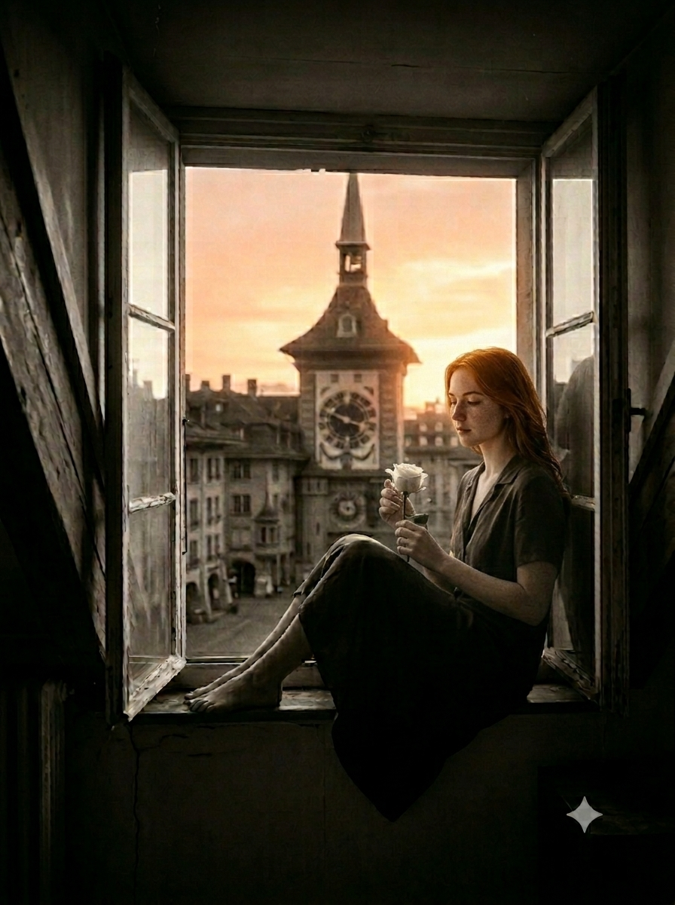

Берн, Рыночная площадь, 27 июля 1948 года
В этот день город задыхался от зноя. Воздух над брусчаткой дрожал, как над раскалённой сковородой, и даже почтовые голуби на карнизах сидели неподвижно, беспомощно раскрыв клювы.
Девушка в лёгком ситцевом платье стояла у входа в цветочную лавку. Ей было восемнадцать, и она была красива той резкой, недетской красотой, которая пугает учителей и притягивает взгляды случайных прохожих.
Майя-Роза.
Она сняла мансарду три недели назад. Шесть ступенек, скрипучая дверь, одно окно под самой крышей. Окно выходило на площадь, и по вечерам она сидела на подоконнике, смотрела на фонари и слушала, как где-то далеко играет радио.

Она работала у мадам Жако. Семь утра — полив, обрезка, перевязка. Запах сырой земли и срезанных стеблей. К концу дня пальцы пахли зеленью. Это был честный запах. Первый в её жизни, который не имел отношения к пансионам, чужим правилам и выученным наизусть молитвам.
Они пришли. Апрель — первым. Алекс — через десять минут.
— А ещё... — Майя тараторила, нервно теребя край салфетки, — я подала документы в колледж. И меня, кажется, приняли...
Алекс и Апрель переглянулись. Им было нечего на это ответить, кроме молчаливого, участливого кивка.
— Мадам Жако очень добра ко мне, — не унималась она. — Она уступила мне мансарду. Прямо над лавкой. Шесть ступенек, скрипучая дверь... Там очень жарко, но зато голуби...
Оба мужчины подняли головы, пытаясь понять, про мансарду какого именно дома она только что рассказывала.
— И после педагогического я не выйду замуж. Буду учиться дальше. Вы же знаете, как хорошо в Бернском университете? — её голос стал тише, задор медленно улетучивался. — Мы тогда сможем чаще видеться...
Она замолчала. Посмотрела на их лица. И всё поняла.
— Вы ведь ещё придёте? Это будет наш столик? — спросила она.
Майя встала с плетёного стула и, не оборачиваясь, направилась к журчащему фонтану.
Куранты на башне пришли в движение, предупредительно скрипнув. Заиграла простая, до боли знакомая детская мелодия. Она слышала её каждый день. Знала наизусть.
— Вы придёте завтра? — донёсся её голос от фонтана.
Апрель посмотрел на Алекса. Тот коротко кивнул.
— Да, — сказал Апрель, стараясь перекричать часы.
Куранты закончились. Мелодия оборвалась.
Майя повернулась на невысоких каблучках и пошла к лавке. Мадам Жако уже ждала её, чтобы закрыть магазин. Майя-Роза помогла снять вывеску, выбросить увядшие букеты и навести порядок.
Мужчины молча сидели ещё минуту.
Алекс докурил. Встал. Положил окурок в пепельницу — аккуратно, как учили в Коле. Обернулся.
— Hasta nunca, — бросил он.
Апрель промолчал.
Расставляя пустые вазы, Майя подняла голову, пытаясь разглядеть через витрину их столик. Он был пуст. Но на краю стола лежала белая роза. Одна.
Лавка закрыта. Она пошла по узкой лестнице наверх. Шесть ступенек. Скрипучая дверь. Одно окно под самой крышей.
Она села на подоконник и посмотрела на закат.
На башне снова заиграли часы. Мелодия закончилась.
Тишина.
Три секунды. Долгие, как целая жизнь.
И потом — удар колокола. Один. Тяжёлый, медный, уходящий в небо. Он прокатился над крышами, над фонтаном, над пустым столиком, где лежала белая роза.